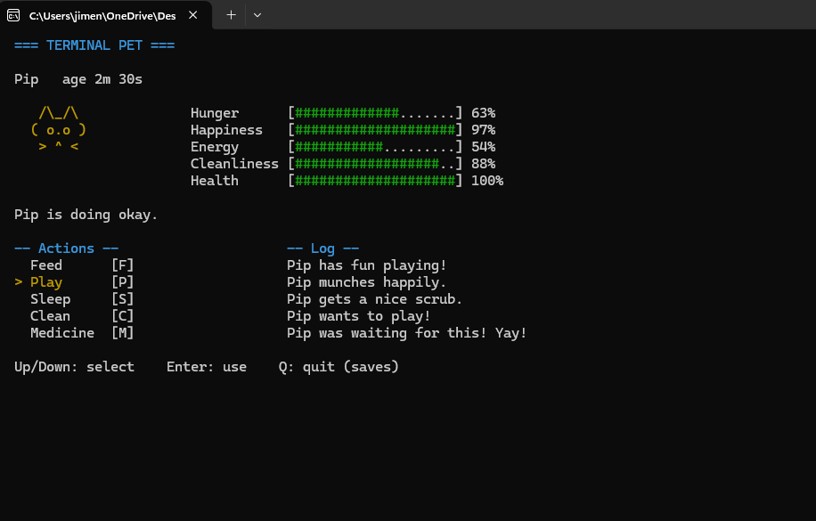

Languages
C++, HTML, CSS, JavaScript, C#
Student Developer Portfolio
Hello! I am a student at Full Sail University studying for game development. I am learning C++ and C# programming languages. I always looking for ways to improve my skills and learn new things.

About Me
As a Developer, I tend to have very strong ideas for projects that I want to create. I am very passionate about what I do and I am always looking for ways to improve.
C++, HTML, CSS, JavaScript, C#
Visual Studio, Git, GitHub, Unity Game Engine
Object-oriented programming, debugging, and clean code
Featured Work

C++ Console Application
Its a pet simualator that runs in the console. you can feed it, play with it, and so much more. It's a fun little project that is inpired by the Tomagotchi pet.
I learned how to implement and create a state machine in this little project. I studied how Tomagotchi works and how to implement it into a console application. Also I learned how to use keyboard controls to interact with the pet.